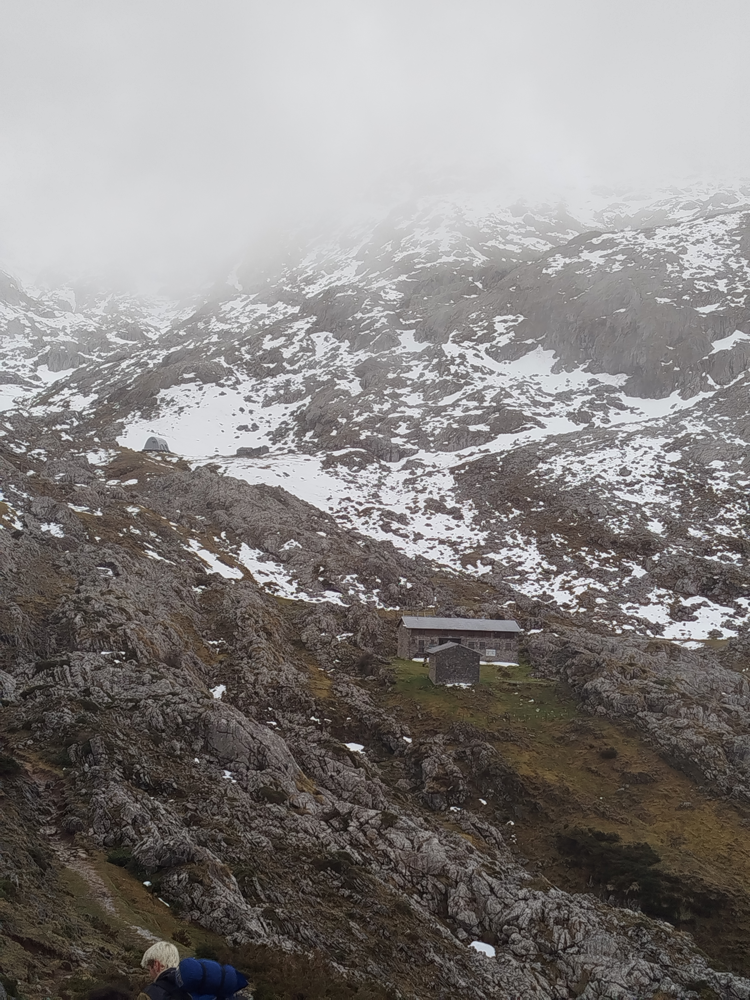
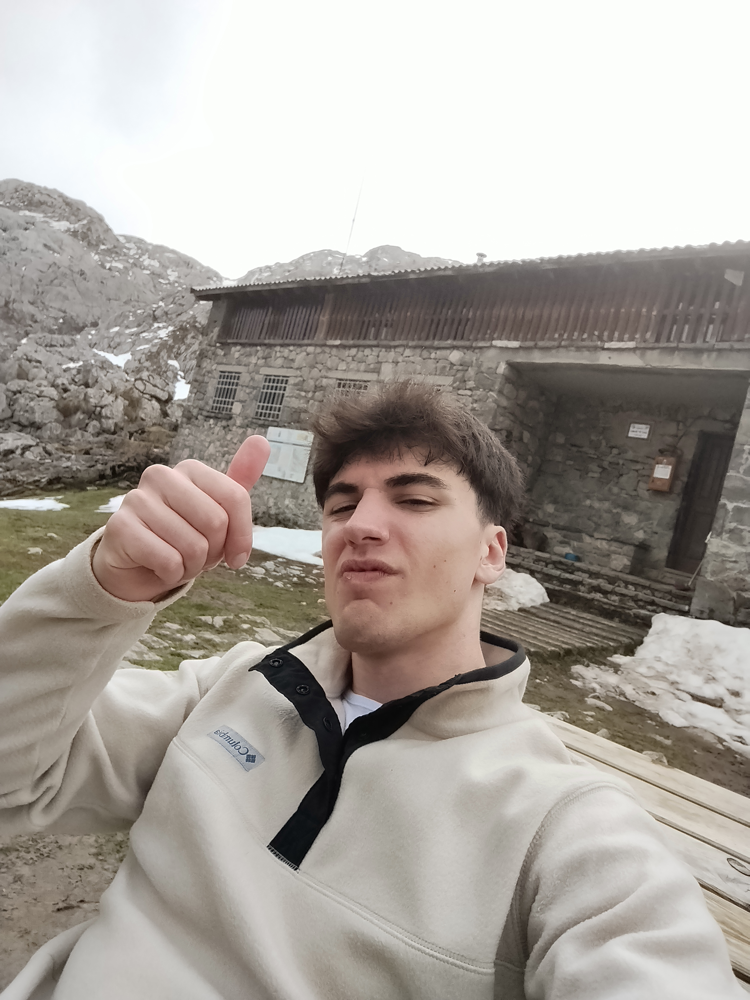
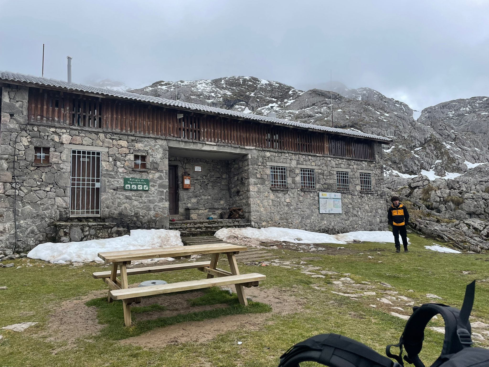
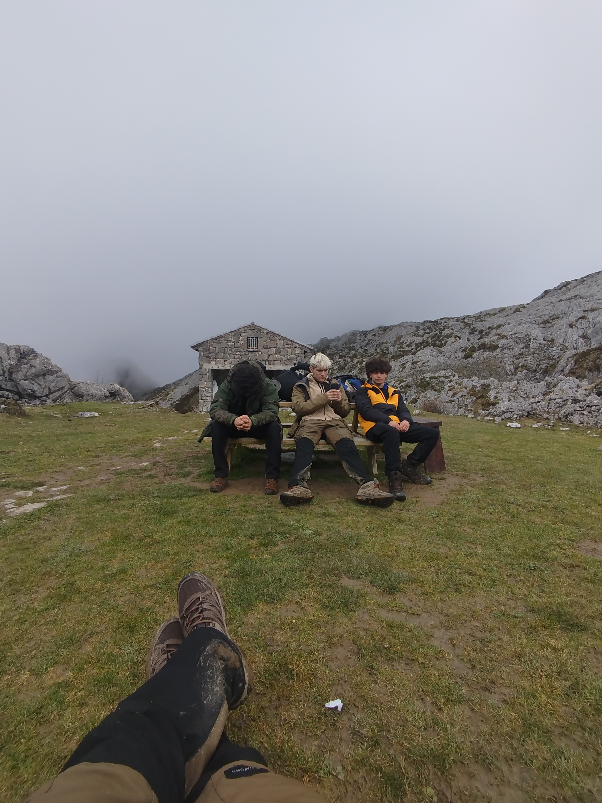
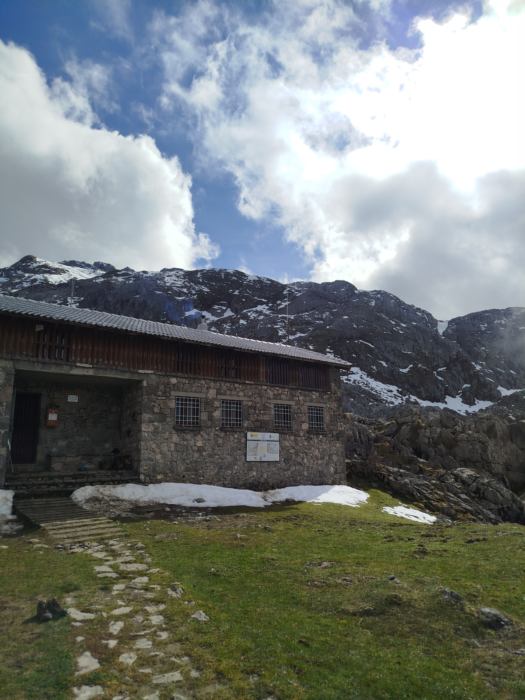

Vegarredonda

La base de operaciones del Cornión
Vegarredonda es mucho más que un refugio de montaña: es el corazón logístico del Macizo Occidental de los Picos de Europa. Situada a 1.470 metros de altitud, esta vega abierta con su refugio acoge cada temporada a cientos de montañeros que la usan como punto de partida hacia las cumbres del Cornión, especialmente el Pico Cuvicente y el Pico Catalimpó. La FEPA gestiona el refugio, que cuenta con pernocta y servicio de bar-restaurante.
El camino desde el Lago Ercina
El acceso más habitual a Vegarredonda parte del aparcamiento del Lago Ercina. Una pista de montaña —prohibida al tráfico privado en temporada alta— asciende suavemente durante unos 7 kilómetros hasta la vega. El camino bordea zonas de hayedo y brezal, con puntuales miradores sobre los lagos y el macizo. Son unas 2 horas a pie de ida, con un desnivel moderado de unos 400 metros que lo hace apto para toda la familia.
Flora, fauna y silencio
El entorno de Vegarredonda es un auténtico santuario natural. Los rebecos campan con total libertad por las laderas circundantes, y no es raro ver zorros o incluso osos pardos en los aledaños del macizo. La flora incluye desde brezos y arándanos en las zonas bajas hasta pastos alpinos y plantas crasas adaptadas al karst en las zonas altas. Al caer la noche, la ausencia de contaminación lumínica convierte el cielo en un espectáculo de primer orden.




